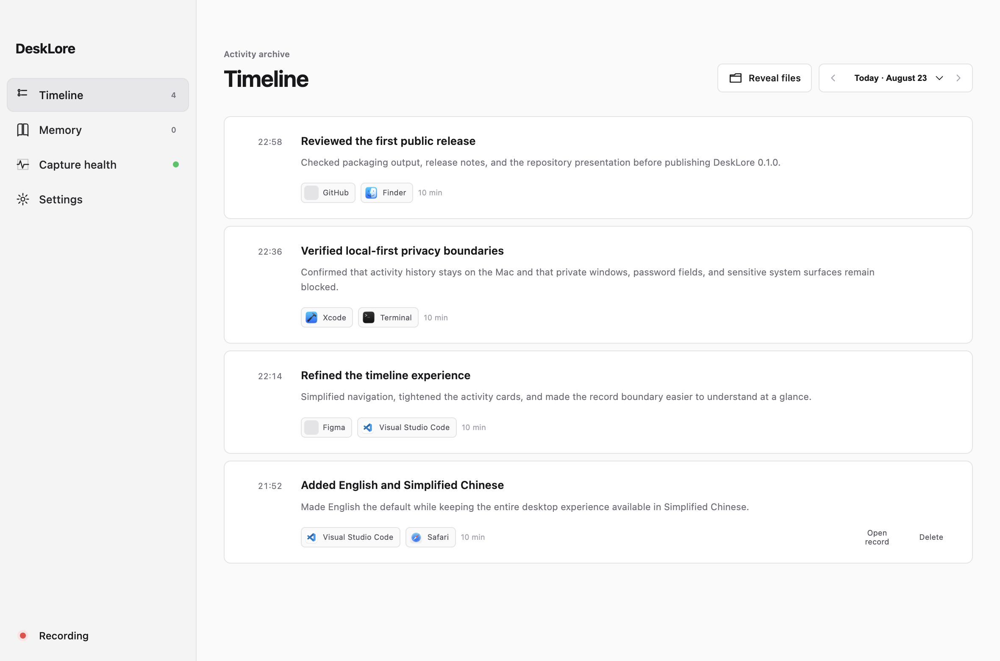

Understand activity instead of saving the whole screen.
Apps, windows, URLs, and interactions are normalized and filtered first.
Turn everyday activity into a memory stored on your machine, with every claim traceable to evidence and no continuous screen recording.
DeskLore reads app, window, page, and interaction semantics, keeps them as evidence, and grows them into a memory you can inspect and delete.
DeskLore groups continuous events into clear activity segments, preserving time, context, and sources so your day becomes traceable again.

DeskLore processes history locally by default. Visual fallback is off, sensitive surfaces are filtered, and raw events are kept only briefly.
Read the full privacy policyApps, windows, URLs, and interactions are normalized and filtered first.
Window visuals are added only when semantics are insufficient and the user explicitly enables them.
Records include source IDs and can be deleted or regenerated by the user.
Read app, window, and interaction semantics through macOS Accessibility.
Remove password fields, private browsing, and sensitive system surfaces at the native capture boundary.
Create searchable Markdown timelines at ten-minute, six-hour, and daily resolutions.
DeskLore runs locally and is open source under Apache-2.0. You can inspect how it captures, filters, stores, and deletes data.
View source